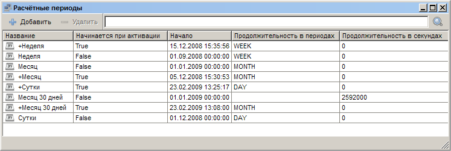
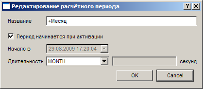

|
Интерфейс и логика |
Top Previous Next |
|
Открыть раздел «Расчетные периоды» можно одним из следующих способов:
– кнопкой на панели; – через меню «Главное меню» → «Расчетные периоды»;
Интерфейс окна составляют кнопки «Добавить» и «Удалить» на дополнительной панели инструментов, а также список заданных в системе расчетных периодов. Для каждого периода должно быть указано его название, возможность начала периода при назначении пользователю тарифного плана, время начала расчетного периода, его длительность в константах либо секундах.

При двойном щелчке по названию существующего расчетного периода, выборе пункта «Настройки» в контекстном меню либо создании нового расчетного периода открывается единое окно редактирования расчетного периода.
Окно «Редактирование расчетного периода»
Данное окно открывается при двойном щелчке по названию существующего расчетного периода в списке, выборе пункта «Настройки» в контекстном меню либо создании нового расчетного периода. Здесь указывается название расчетного периода («Название»), его сроки (поля «Начало в», «Длительность» и «секунд»), а также особенности активации (флажок «Период начинается при назначении пользователю тарифного плана»).

Для того чтобы расчетный период стартовал только при назначении пользователю определенного тарифного плана, установите флажок «Период начинается при активации».
Если флажок не установлен, то для корректного создания периода необходимо указать время его начала в поле «Начало в». С данного момента период начнется для всех пользователей соответствующих тарифных планов.
«Длительность» определяет протяженность расчетного периода в «периодах» (DAY/WEEK/MONTH/YEAR/DONT_REPEAT/---). This help file was created with an unregistered evaluation copy of Help & Manual. © EC Software. All rights reserved. This message will not appear if you compile this help file with the registered version of Help & Manual. |